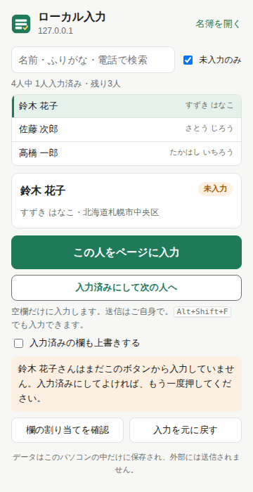
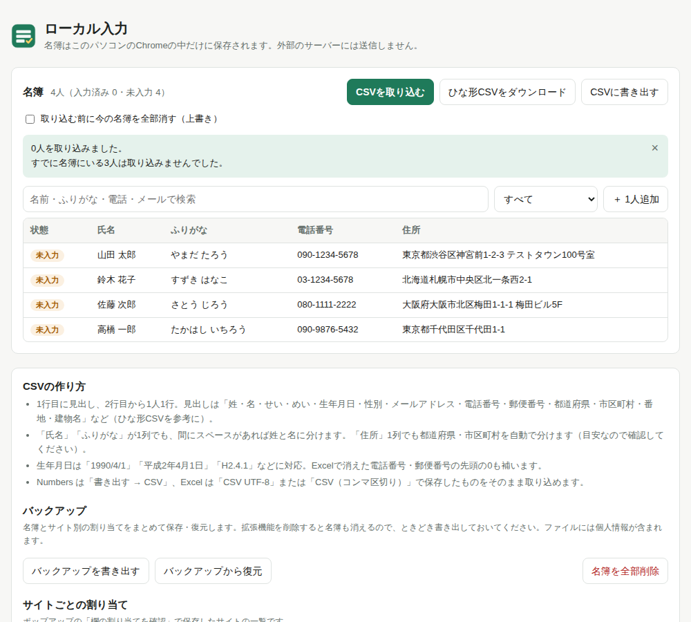

名簿 × 申込フォーム
名簿のCSVを取り込んでおけば、あとは人を選んでボタンを押すだけ。名前・ふりがな・生年月日・住所・電話・メールを、申込や登録のフォームにまとめて入力します。
名簿の人を選んで「この人を入力」を押してみてください。
最初に名簿を取り込めば、あとはフォームを開くたびに人を選んで押すだけです。
Numbers や Excel で作った名簿をCSVで保存して取り込みます。「氏名」「フリガナ」「住所」が1列ずつでも自動で分け、読めなかった値は取り込み時に知らせます。
ツールバーのボタンから名前・ふりがな・電話番号で検索して選び、「この人をページに入力」。ショートカット ⌥⇧F でも入力できます。
内容を確かめて自分で送信。「入力済みにして次の人へ」で次の未入力の人に進みます。進み具合は名簿画面で一覧できます。
扱うのは他の人の個人情報なので、仕組みごと外に出さない作りにしています。
欄のラベルや並び方から、何を入れる欄かを判定します。名簿の形式とフォームの形式が違っても、欄に合わせて変換します。


入らない欄があっても、ポップアップの「欄の割り当てを確認」で直せる場合があります。
このページはいつも最新版になっています。新しい版が出たら、同じページからもう一度ダウンロードしてください。
ローカル入力 …
中身：拡張機能のフォルダ（local-autofill-extension）・手順書（はじめにお読みください.html）・名簿のひな形CSV
chrome://extensions を開き、右上の「デベロッパー モード」をオンにします。local-autofill-extension を選びます。local-autofill-extension フォルダの中身を、新しいものの中身に入れ替えます。フォルダ自体の場所や名前は変えません。chrome://extensions の「ローカル入力」にある 🔄（更新）ボタンを押します。名簿はそのまま残ります。いま使っている版は、chrome://extensions の「ローカル入力」の欄に表示されています。